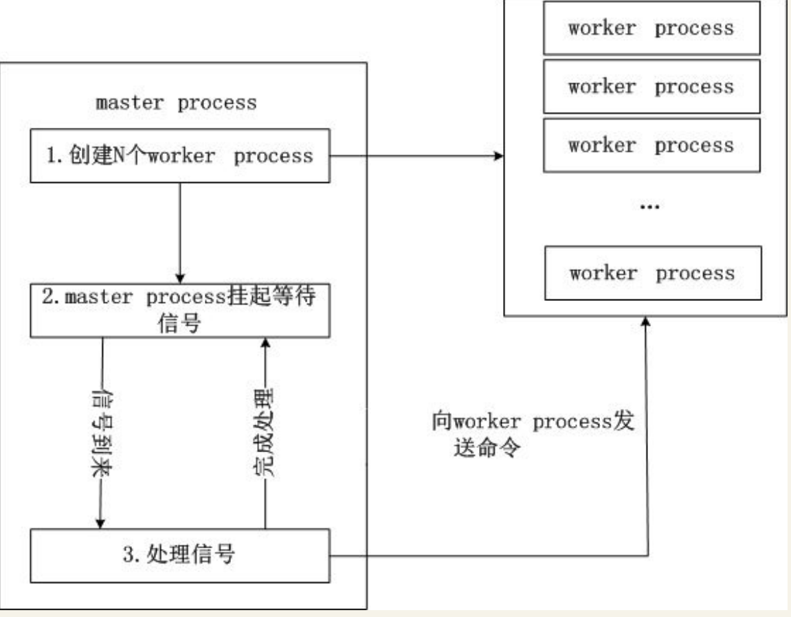
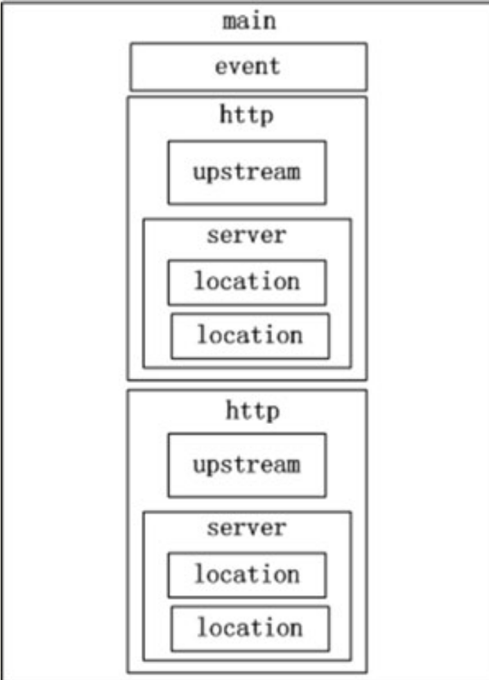
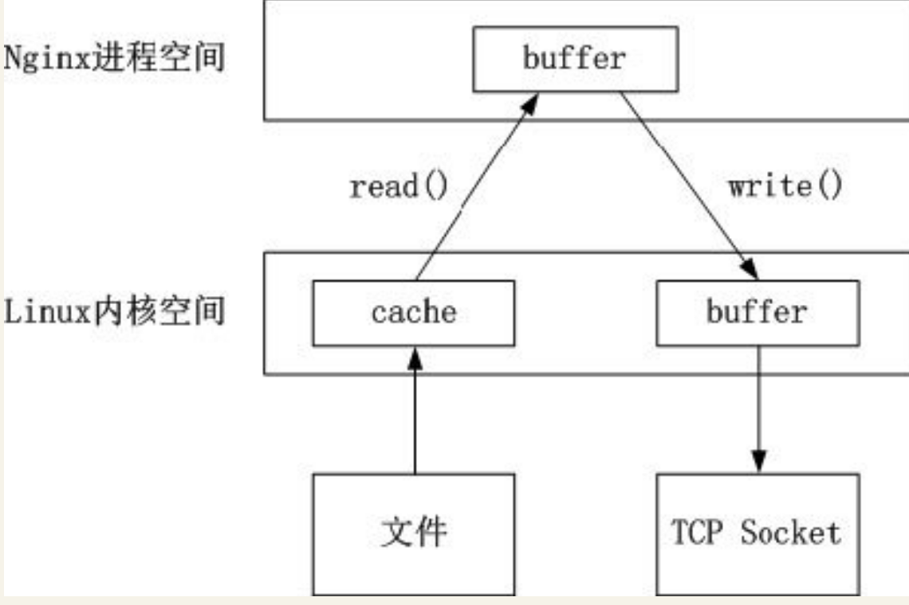
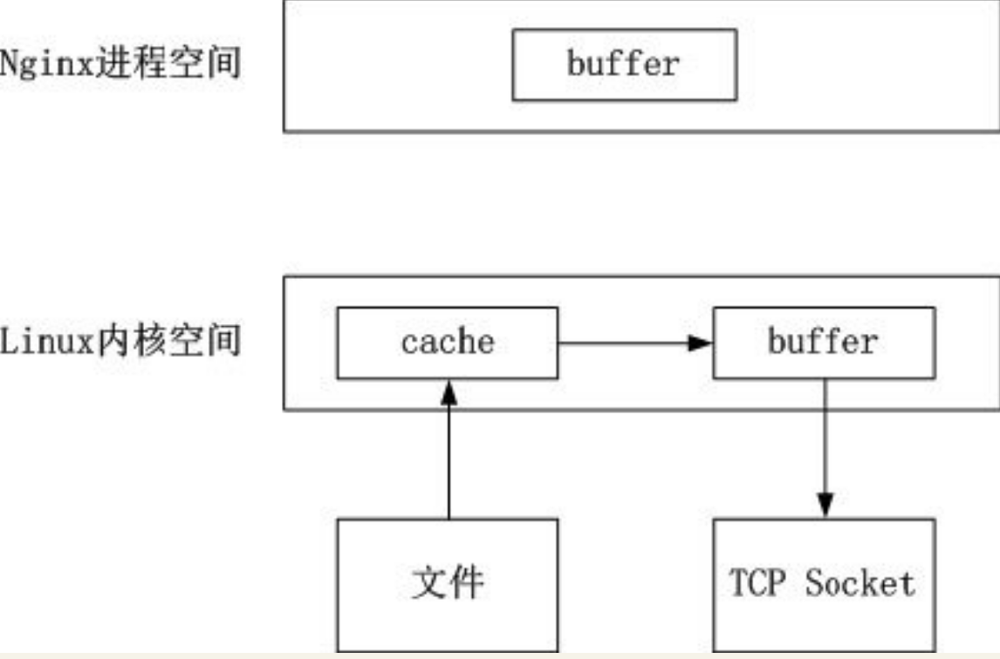
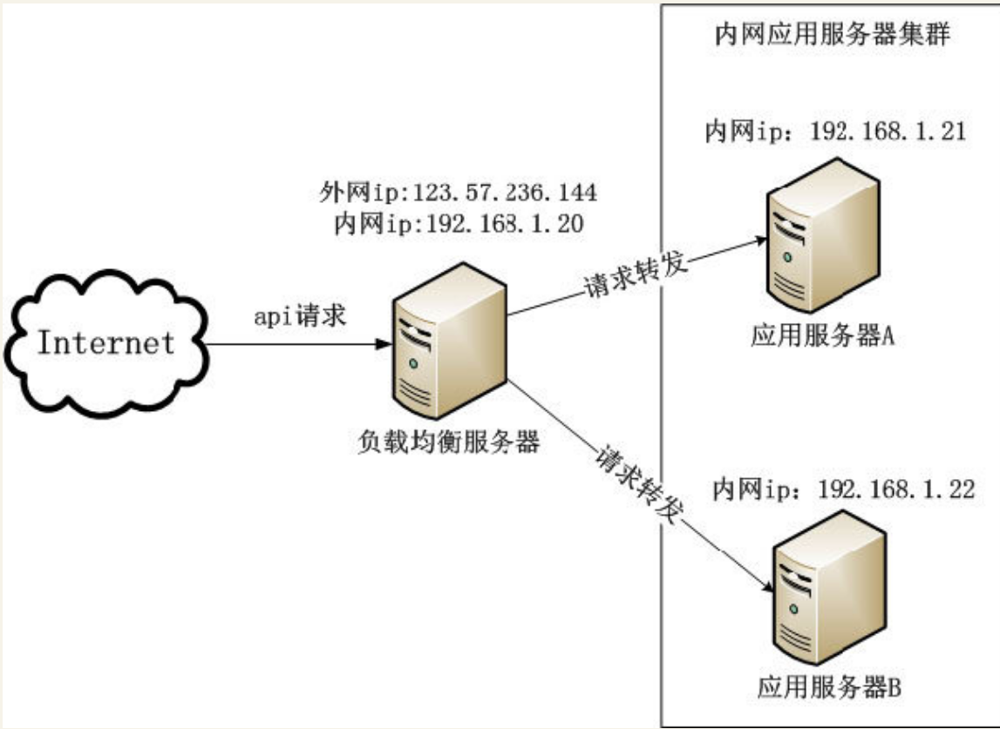

Contents
6.5. Nginx—App后台HTTP服务的利器¶
Nginx是一个高性能的HTTP和反向代理服务器，在BAT等巨头和众多的移动互联网公司中有广泛的应用。其主要特点是占用内存少，并发能力强。
6.5.1. 简介¶
Nginx与Apache类似，其是一个高性能的HTTP和反向代理服务器，也是一个imap/pop3/smtp代理服务器。
Nginx是由Igor Sysoev为俄罗斯访问量第二的Rambler.ru站点开发的，其已经在该站点运行超过三年。Igor将Nginx源代码以类似BSD许可证的形式发布。
6.5.2. 基本原理¶
下面讲述Nginx两方面的基本原理。
·工作模型
·进程解析
6.5.3. 工作模型¶
Nginx的高性能主要是其使用了epoll和kqueue网络I/O模型
Apache则使用的是传统的select模型
目前在Linux下能够承受高并发访问的著名开源软件Squid、Memcached采用的都是是epoll网络I/O模型。
Apache采用的select模型和Nginx采用的epoll模型之间的区别。
select模型
使用select模型的服务员是这样接待客人的：当客人一入门，服务员就立刻引导客人入座，
然后把菜单递给客人，等待客人点菜。客人点菜完毕后，服务员到厨房下单。
当厨房把菜做好后，服务员送菜到客人的桌上，平时服务员就在桌子旁边招待客人。
如果客人这时看电影，服务员也要守候在客人桌子旁边。
最后等客人吃完饭结账后,送客人出门，服务员继续招待下一个客人。
epoll模型
使用epoll模型的服务员是这样接待客人的：当客人进门，门口有感应器通知服务员，
服务人就引导客人入座然后招待其他客人。客人看完菜单准备点菜，客人呼唤服务员，
服务员来到客人的桌上记下客人所点的菜，然后到厨房下单后继续招待其他客人。
当服务员收到厨房通知菜做好了，服务员把菜送到客人桌后继续干其他工作。
客人吃完饭了，客人呼唤服务员结账，服务员送客人出门后继续招待其他客人。
从上面的过程可看到，当处理大量的请求（相当于接待很多客人），
epoll模型远远高效于select模型。
6.5.4. 进程解析¶
正常工作的Nginx有多个进程，基本的有master process（称为主进程）和worker process （称为工作进程）。
maste process(主进程)：
充当整个进程组与用户交互的接口，维护并监控worker process。
不处理具体的业务，只把相应的信息发到worker process。
其同时负责Nginx的平滑重启、配置文件生效、关闭等。
worker process(工作进程)：
处理具体的任务。
Nginx中master和worker的工作流程 
6.5.5. 常用配置¶
Nginx的配置文件nginx.conf是纯文本书件，位于Nginx安装目录的conf目录下， 整个配置文件是以块的形式组织。 每个块以“{}”来表示，采用嵌套的方式，一个大块中可以包括小块。
最大的块是main块，main块里包含event块和http块，http块包含了upstream块和server块，server块包含了多个location块，整个配置文件的结构如图 
每个模块的含义如下。
·main：Nginx的全局属性配置。
·event：Nginx的工作模式及连接数上限。
·http：http服务器相关属性的配置。
·upstream：负载均衡属性的配置。
·server：虚拟主机的配置。
·location：location的配置。
根据上面介绍的Nginx配置文件的6大块，详细介绍Nginx每个指令的含义。
1.Nginx的全局配置¶
Nginx全局配置的代码如下。
user www www;
worker_processes 4;
error_log /home/wwwlogs/nginx_error.log crit;
pid /usr/local/nginx/logs/nginx.pid;
worker_rlimit_nofile 52000;
这段代码中每个配置的含义如下。
user：指定了Nginx工作进程运行的用户及用户组，默认是nobody，这个配置文件是使用了用户www和用户组www。
worker_processes：指定Nginx开启的工作进程数。每个进程大约占用10～12MB的内存。如果是多核的CPU，这里应设置和CPU核数一样的进程数。
error_log：全局错误日志的位置与日志输出的级别。日志的输出级别可选择debug、info、notice、warn、error、crit，其中debug级别输出的日志最详细。当运维人员查找问题时，错误日志是非常重要的参考。
pid：存储Nginx进程id的文件路径。
worker_rlimit_nofile：指定了一个Nginx进程最多可以打开的文件描述符。注意，这里的配置受限于Linux中最多可以打开的文件描述符配置。
2.event配置¶
event配置的代码如下。
events
{
use epoll;
worker_connections 51200;
}
这段代码中每个配置的含义如下。
·use：指定Nginx的工作模式。Nginx可选的工作模式有：select、poll、kqueue、epoll、rtsig和/dev/poll。前面已经介绍过select和epoll两种工作模式处理方式的不同。在Linux下epoll工作模式是首选，在FreeBSD下kqueue工作模式是首选。
·worker_connections：定义每个worker process的最大连接数，默认是1024。注意，这里的配置受限于Linux中最多可以打开的文件描述符数限制。当前Nginx可以处理的最大连接数为max_clients = worker_processes×worker_connections。
3.http配置¶
http配置的代码如下：
http{
include mime.types;
default_type Application/octet-stream;
client_header_buffer_size 32k;
large_client_header_buffers 4 32k;
client_max_body_size 50m;
sendfile on;
tcp_nopush on;
keepalive_timeout 60;
tcp_nodelay on;
gzip on;
gzip_min_length 1k;
gzip_buffers 4 16k;
gzip_http_version 1.0;
gzip_comp_level 2;
gzip_types text/plain Application/x-javascript text/css Application/xml;
gzip_vary on;
include vhost/*.conf;
}
这段代码中每个配置的含义如下。
·include：包含其他的配置文件，这种机制有利于配置文件的模块化，方便用户管理大量的配置文件。
·default_type：当文件类型未定义时，默认使用二进制流的格式。
·client_header_buffer_size：客户端请求头buffersize的大小。
·large_client_header_buffers：客户端请求中较大的消息头的缓存的数量和大小，这里“4”是数量，“32k”是大小。
·client_max_body_size：客户端请求中http body的大小，一般可以理解为请求的文件大小。
·sendfile：设置为on表示启动高效传输文件的模式。
sendfile可以让Nginx在传输文件时直接在磁盘和tcp Socket之间传输数据。如果这个参数不开启，会先在用户空间申请一个buffer，用read函数把数据从磁盘读到cache，再从cache读取到用户空间的buffer，再用write函数把数据从户空间的buffer写入到内核的buffer，最后到TCP Socket。开启这个参数后，可以让数据不用经过用户buffer。
·tcp_nopush：该选项仅在sendfile开启的时候才起作用，主要防止网络堵塞。
·keepalive_timeout：设置客户端保持活动连接的时间。超过这个时间，服务器会关闭连接。
下面是Nginx的httpgzip模块的配置，这个模块支持在线实时压缩输出数据流，需要在编译Nginx时带上参数“--with-http_gzip_static_module”才能使用这个模块。
·gzip：设置为on，启动gzip模块。
·gzip_min_length：设置只有当页面的大小大于这个值时，才启用gzip压缩。页面大小值通过读取http头“Content-Length”来获取。建议是1KB，文件太小，压缩后有可能会更大。
·gzip_buffers：gzip的缓冲区的数量和大小。默认是申请和“Content-Length”中一样大小的缓冲区。
·gzip_http_version：支持的HTTP协议版本。
·gzip_comp_level：用gzip压缩比。取值是从1～9，1是压缩比最低，但速度快，9是压缩比最高，但速度慢，而且特别消耗CPU资源。
·gzip_types：所压缩文件的类型。一般来说是压缩传输中的文本资源文件，例如CSS、JS、HTML等。
·gzip_vary：是否让前端的缓存服务器缓存压缩后的GZIP文件。
·include vhost/*.conf：包含vhost文件夹中后缀名为“conf”的配置文件。通常在vhost文件夹下存放的是内容为server块的conf文件，根据经验，最好是一个域名对应一个conf文件，以方便管理。
设置sendfile为off时传输文件的流程： 
设置sendfile为on时传输文件的流程: 
4.负载均衡配置¶
负载均衡配置的代码如下。
upstream test.com{
server 192.168.1.20:80 weight=2;;
server 192.168.1.21:80 weight=1;
}
upstream模块通过简单的调度算法实现客户端到服务器的负载均衡。在上面的例子中，test.com是这个负载均衡的名字，可以在后面的配置中调用。
Nginx支持以下4种负载均衡算法。¶
1.加权轮询（默认的算法）：请求按时间分别分配到不同的服务器上。
2.ip_hash：使用请求的ip算出hash值，根据hash值分配到不同的服务器上，固定的ip的请求，会分配到固定的服务器。这种策略有效地解决了网站服务的session共享问题。
3.fair：按后端服务器的响应时间来分配请求，响应时间短的优先分配。Nginx默认是不支持这种负载均衡算法，需要安装Nginx模块和upstream_fair模块。
4.url_hash：使用请求的URL算出hash值，根据hash值分配到不同的服务器上，固定的URL的请求，会分配到固定的服务器上。这种策略有利于提高后端服务器的缓存命中率。Nginx默认是不支持这种负载均衡算法，需要安装Nginx的hash软件包。
upstream模块可以为所配置的服务器指定状态值，常用的状态值如下。
down：服务器不参与到负载均衡中，当后台人员进行故障排查时这个状态非常有用。
weight：制定轮询的权重，权重越大，分配到的几率越多。在上面的例子中，根据权重的不一样，分配到20和21的请求的比例大概是2:1。
backup：备份机器。当其他的服务器不可用时，才把请求分配到这台服务器。
max_fails：允许请求失败的次数，默认值是1。
fail_timeout：经历了max_fails次失败后，暂停服务的时间。
注意： 当负载均衡是ip_hash时，服务器的状态值不能是backup和weight。
5.server虚拟主机配置¶
server虚拟主机配置的代码如下。
server
{
listen 80;
server_name local.test.cn;
index index.html index.htm index.php default.html default.htm default.php;
root /var/www/test;
}
这段代码中每个配置的含义如下。
·listen：指定虚拟主机监听的端口。
·server_name：指定虚拟主机对应的域名，多个域名之间以空格分割。
·index：默认的首页文件。
·root：网站的根目录。
6.location配置¶
location配置的代码如下。
location ～ .*\.(gif|jpg|jpeg|png)$
{
expires 30d;
}
location支持正则表达式和条件判断匹配，用户可以通过location指令对动、静态网页进行过滤处理。
上面这段代码的含义是经过正则表达式匹配， 设置文件格式为GIF、JPEG、PNG的文件在HTTP应答中“Expires”和“Cache-Control”的HTTP头， 以达到在浏览器中缓存图片的作用。这里表示把图片在浏览器中缓存30天。
7.HTTPS的配置¶
App经常需要通过HTTPS协议来访问某些对安全性很高要求的API（例如登录、注册）。HTTPS核心的是安全证书，生成安全证书有两种途径。
·缴纳一定的费用，到证书服务商申请。
·用户给自己颁发证书，即手动生成。
如果证书只是用在开发阶段，那么给自己颁发证书就行了，没必要到证书服务商那申请，不划算。下面介绍怎么手动生成证书，并在Nginx中配置使用这个生成的证书。
在CentOS环境下，生成证书前先要确保安装openSSL和openSSL-devel，如果没安装，使用下面的命令安装。
yum install openssl
yum install openssl-devel
生成证书的代码如下。
cd /usr/local/nginx/conf
opensslgenrsa -des3 -out local.key 1024
opensslreq -new -key local.key -out local.csr
opensslrsa -in local.key -out local_nopwd.key
openssl x509 -req -days 365 -in local.csr -signkey local_nopwd.key -out local.crt
在Nginx的虚拟主机中加上下面的配置，并把端口设置为443，就能使用https://api.test.cnm的形式访问需要通过HTTPS加密的API，配置如下。
server {
listen 443;
ssl on;
ssl_certificate /usr/local/nginx/conf/local.crt;
ssl_certificate_key /usr/local/nginx/conf/local_nopwd.key;
server_name api.test.cn;
index index.html index.htm index.php default.html default.htm default.php;
root /var/www/test;
}
8.下载App的配置¶
APK和IPA分别是Android应用和iOS应用的扩展名。 如果浏览器下载Nginx服务器中后缀名为.apk和.ipa的文件时，浏览器会自动重命名为ZIP文件。
如果需要下载时文件名后缀就是.apk或.ipa，可以修改Nginx conf目录下的mime.types文件,在文件中增加下面的两行。
application/vnd.android.package-archive apk;
application/iphone pxl ipa;
重启Nginx后配置生效。
9.生产环境中修改配置的良好习惯¶
检查Nginx的配置文件语法¶
/usr/local/nginx/sbin/nginx -t
如果重启Nginx前没保证配置文件语法正确，当Nginx重启过程中检测到配置文件有问题，Nginx就会停止服务，这样就影响网站的正常运行。
平滑重启Nginx¶
/usr/local/nginx/sbin/nginx -s reload
10.性能统计¶
编译Nginx源码的时候带上参数“--with-http_stub_status_module”，就安装了Nginx的统计模块，这个模块能够获取Nginx自上次启动以来的工作状态。
在虚拟主机的配置文件中添加以下的代码，启动统计功能。
location /nginx_status {
stub_status on;
access_log off;
}
重启Nginx使配置文件生效，就能在浏览器中输入“http://域名/nginx_status”了解Nginx的状态，会出现类似下方的信息。
Active connections: 1
server accepts handled requests
653 653 685
Reading: 1 Writing: 1 Waiting: 0
上面每项的含义如下。
·Active connections：当前Nginx正处理的活动连接数。
·server accepts handled requests：共处理了653次连接，共处理了653次握手，共处理了685次请求。
·Reading：Nginx读取到客户端的Header信息数。
·Writing：Nginx返回给客户端的Header信息数。
·Waiting：开启keep-alive的情况下，这个值等于Active– (Reading + Writing)，是Nginx已经处理完成，正在等候下一次请求指令的驻留连接。
所以当App的请求被快速处理完毕的情况下，Waiting数比较多是正常的。 如果reading+writing数目较多，则说明App后台并发访问量大，Nginx正在处理过程中。
6.5.6. 实现负载均衡的方案¶
应用服务器上处理业务逻辑，由于应用服务器地位上的重要性，为了保证应用服务器高可用，可使用Nginx负载均衡和健康检查特性，一个初级的方案如图
应用服务器上处理业务逻辑，由于应用服务器地位上的重要性，为了保证应用服务器高可用， 可使用Nginx负载均衡和健康检查特性，一个初步的方案如下：
Nginx负载均衡方案  在上面的方案中，负载均衡服务器部署了Nginx，其绑定了两个ip，外网的ip和内网ip。用DNS服务把域名绑定到外网ip，通过内网ip和应用服务集群内的服务器通信。
在上面的方案中，负载均衡服务器部署了Nginx，其绑定了两个ip，外网的ip和内网ip。用DNS服务把域名绑定到外网ip，通过内网ip和应用服务集群内的服务器通信。
应用集群内的机器不能直接访问网络，所有数据的进出都要经过负载均衡服务器。
这个方案有以下两个好处
·保证了应用服务的高可用，即使有台应用服务器宕机，其他服务器也会继续工作。
·应用服务器不直接连接Internet，减少了被入侵的可能性。
这个方案还有个问题：负载均衡服务器只有一台，如果负载均衡服务器宕机，整个服务就不可用。
针对创业团队采用方案（Nginx+Keepalived）¶
现在业界普遍解决Nginx高可用的方法是Nginx+Keepalived，部署两台Nginx服务器，
通过Keepalived把外网ip绑定到一台Nginx服务器上，如果这台Nginx服务器宕机，
Keepalived就把这个ip漂移到另外一台Nginx服务器上，使服务不受影响。
大公司使用云上负载均衡器（SLB）¶
使用云服务器上负载均衡SLB的服务有以下两个好处。
·云服务器上有专业的运维团队保证负载均衡SLB的高可用。
·负载均衡SLB的服务，比自己购买服务器搭建负载均衡服务便宜多了（甚至有免费的服务，现在UCloud的负载均衡就是免费的）。
花钱购买可靠成熟的服务，不但节省资源，还能提高开发的效率，把自身的精力专注于最核心的业务上。
创业团队的软件架构原则：
尽量使用成熟可靠的云服务和开源软件，自身只专注于业务逻辑
6.5.7. 用Nginx处理业务逻辑¶
在一般的App后台架构中，Nginx是不处理任何业务逻辑的。例如经典的LNMP架构中，客户端请求到达Nginx后，Nginx通过查找location命令，将所有以“.php”为后缀的文件都交给PHP处理。
为了弥补Nginx不能处理业务的缺陷，Nginx开源社区的开发者给Nginx添加了Lua模块，
Nginx使用Lua模块后就具备了处理业务的能力。
在业界广泛使用的OpenResty项目把Lua语言嵌入Nginx中，同时其集成了大量实用的模块以方便开发人员使用。 使用OpenResty的开发人员可以用Lua对Nginx进行脚本编程， 从而可以在Nginx请求处理阶段执行各种Lua代码来处理业务逻辑。 OpenResty的开发者章亦春（网名agentzh），其同时也在维护很多Nginx模块，如果读者需要学习开发Nginx模块，他博客上的教程不得不看，地址为：https://github.com/openresty/Nginx-tutorials/tree/master/zh-cn。
下面是Nginx添加了Lua模块后一个例子。
location /lua {
set $test "hello, world.";
content_by_lua '
ngx.header.content_type = "text/plain";
ngx.say(ngx.var.test);
';
}
后，Nginx通过查找location命令，将所有以“.php”为后缀的文件都交给PHP处理。
为了弥补Nginx不能处理业务的缺陷，Nginx开源社区的开发者给Nginx添加了Lua模块，Nginx使用Lua模块后就具备了处理业务的能力。
Lua是一种脚本语言，由巴西里约热内卢天主教大学里的一个研究小组于1993年开发。其设计目的是为了嵌入到应用程序中，从而为应用程序提供更灵活的扩容功能。Lua由标准C编写而成，几乎在所有操作系统和平台上都可以编译、运行。某些应用和游戏使用了Lua作为嵌入式脚本语言以增强自身的扩展性，例如《魔兽世界》、《愤怒的小鸟》。同时Lua也是一门轻量级的脚本语言，其官方版本只包括一个精简的核心和最基本的库。
在业界广泛使用的OpenResty项目把Lua语言嵌入Nginx中，同时其集成了大量实用的模块以方便开发人员使用。使用OpenResty的开发人员可以用Lua对Nginx进行脚本编程，从而可以在Nginx请求处理阶段执行各种Lua代码来处理业务逻辑。OpenResty的开发者章亦春（网名agentzh），其同时也在维护很多Nginx模块，如果读者需要学习开发Nginx模块，他博客上的教程不得不看，地址为：https://github.com/openresty/Nginx-tutorials/tree/master/zh-cn。
下面是Nginx添加了Lua模块后一个例子。
location /lua {
set $test "hello, world.";
content_by_lua '
ngx.header.content_type = "text/plain";
ngx.say(ngx.var.test);
';
}
把上面的代码加入到localhost的配置文件中，在浏览器输入网址http://localhost/lua，就能看到浏览器中输出字符串“hello, world.”。
Nginx+Lua模块一般是处理一些逻辑比较简单的业务，复杂的业务处理还是在应用服务器上。
Nginx+Lua除了能处理简单的业务外，还能有以下的用途。
·统计所有慢请求。
·过滤不合法的请求。